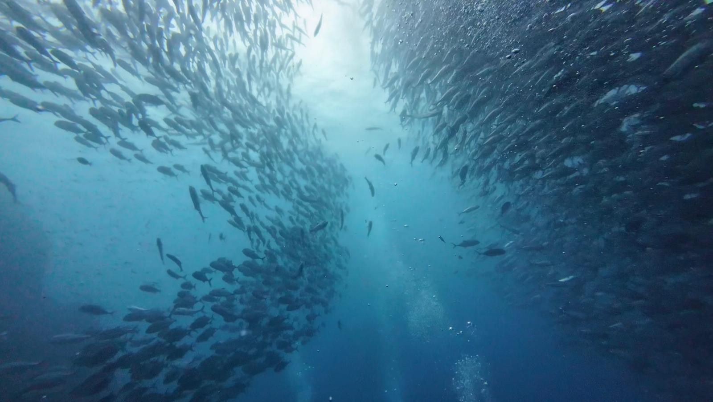
Start / Fotogalerie
Tauchfotos
von Koh Phangan
So sieht Tauchen auf Koh Phangan wirklich aus: Schildkröten, Walhaie und Lächeln unter Wasser. Jedes Foto hier ist auf unseren eigenen Ausfahrten ab Chaloklum entstanden.
Sail Rock & die Walhaie
Das große Blau
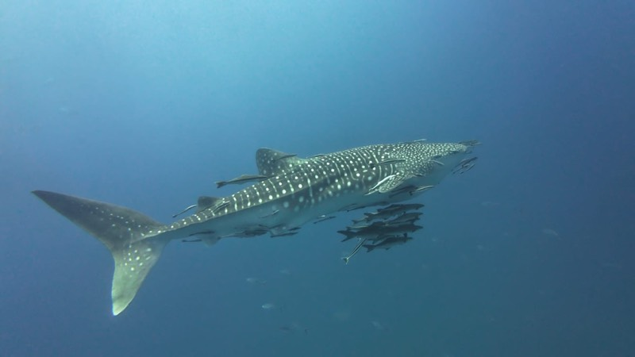


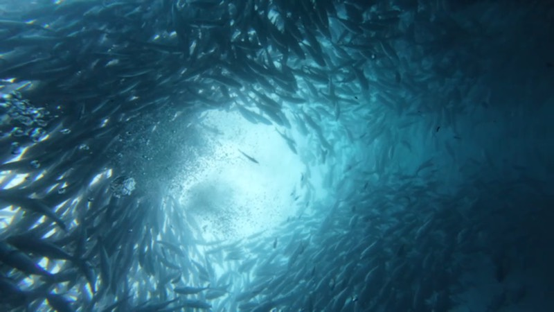


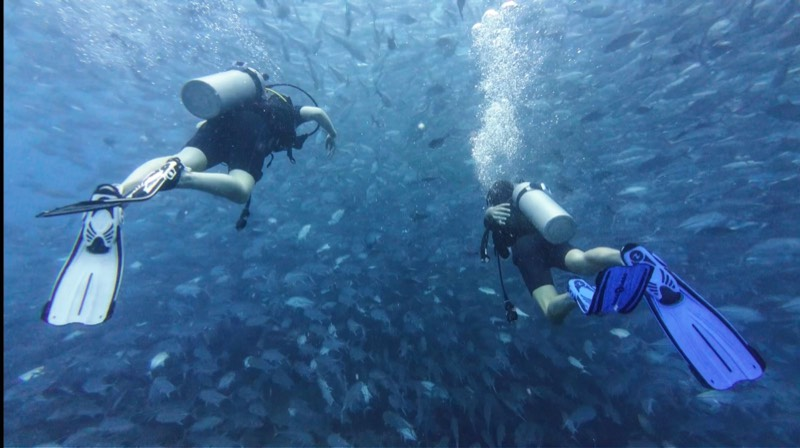
Koh Ma & Little Sail Rock
Das Kleine
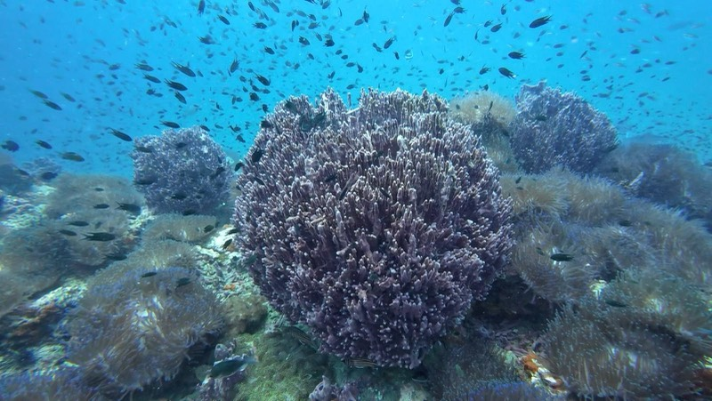


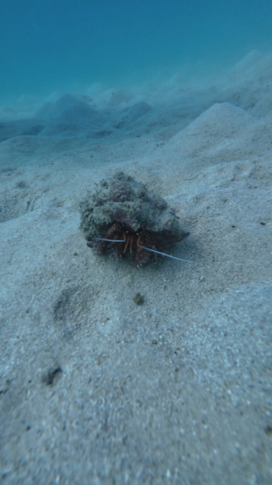

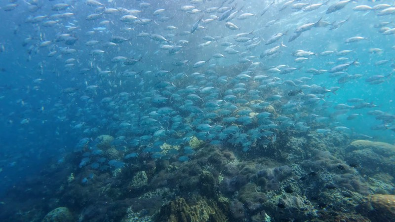
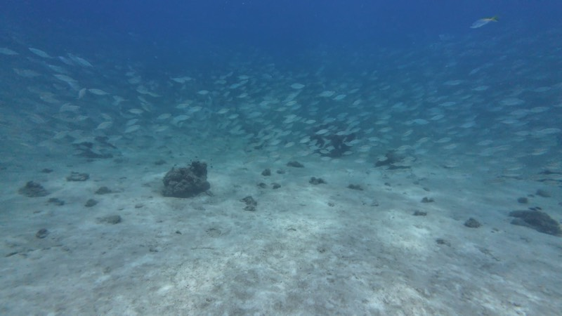
Welcher Fisch ist welcher? Sieh dir unseren Meeresleben-Guide an
Try Dives & Kurse
Unsere Taucher
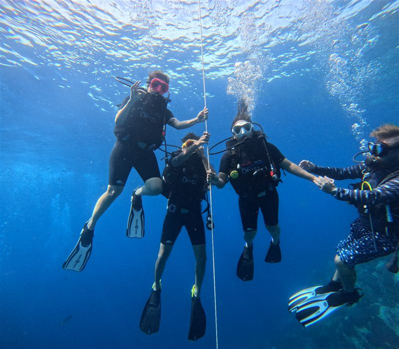
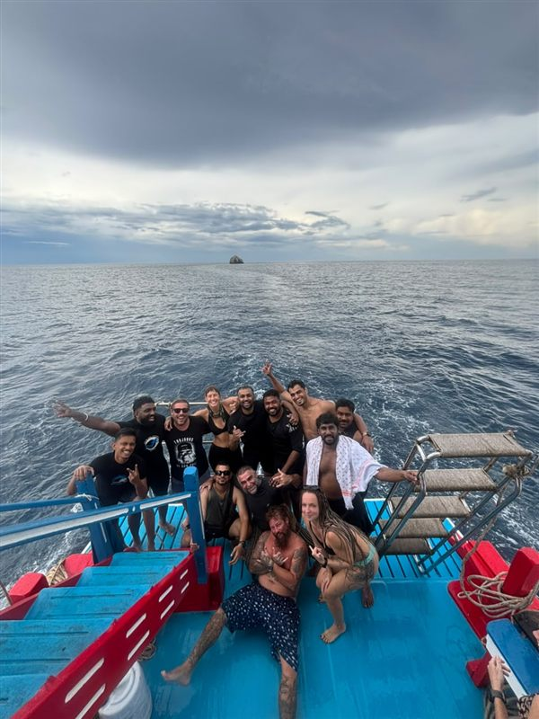


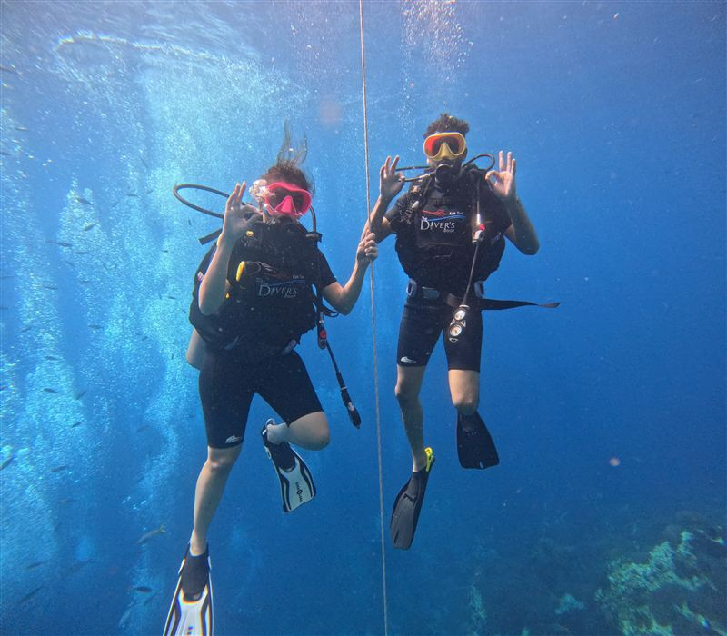
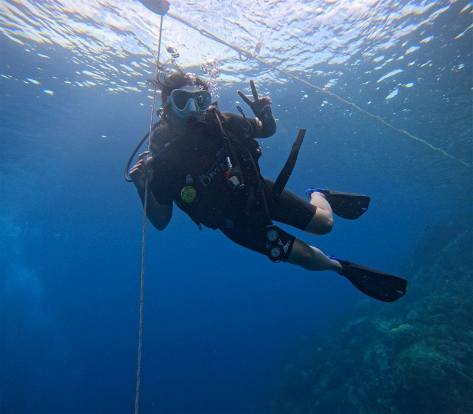

Das Boot und die Menschen darauf
Über Wasser

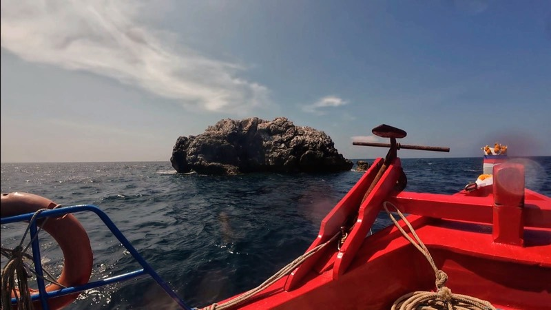

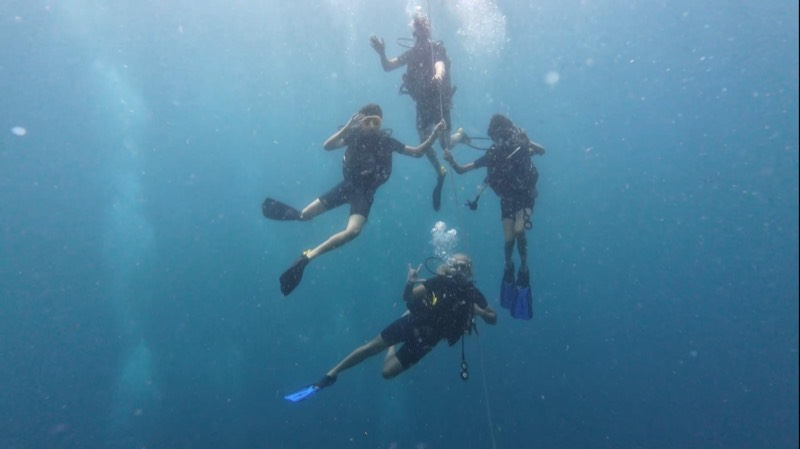
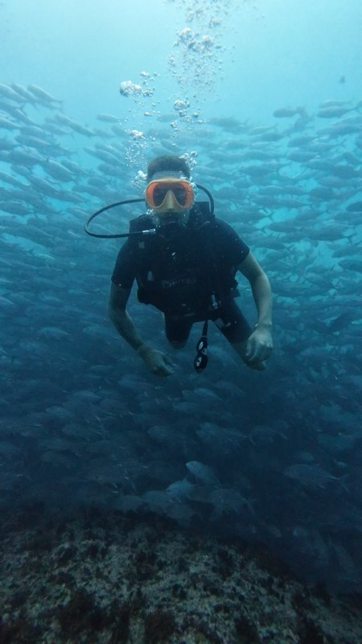

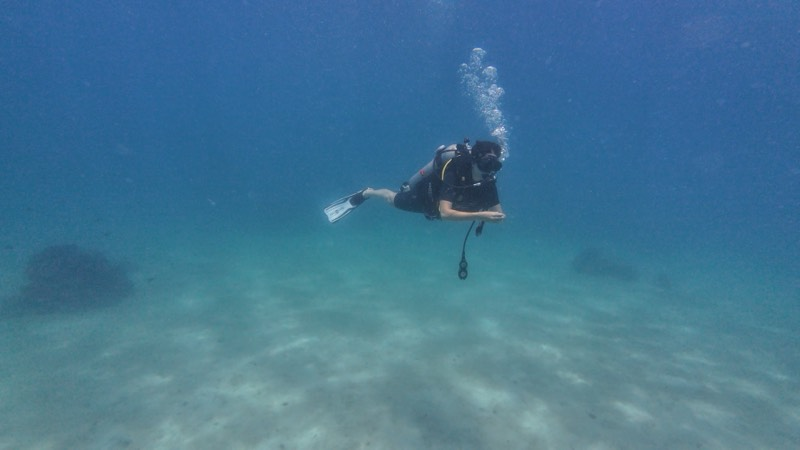

Willst du eigene
Fotos wie diese?
Miete eine Unterwasserkamera für 600฿, oder dein Instructor filmt deinen Tauchgang für 800฿. Bring deine Kamera mit, wenn du eine hast — wir zeigen dir die besten Motive.